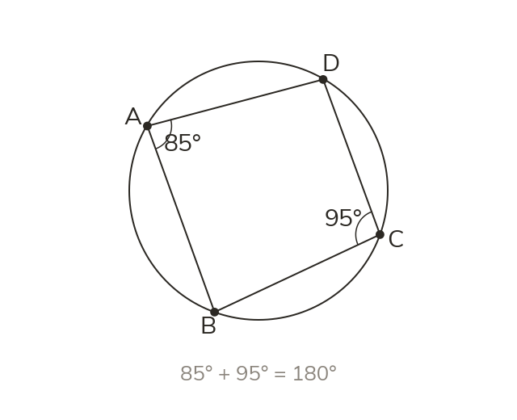
Opposite angles of a cyclic quadrilateral
When all four corners lie on a circle, opposite angles add to 180°. Neighbouring angles follow no such rule.
A machinist can check a circular part from its angles alone. Four corners on a circle, or a tangent touching it, fix angles that can be calculated.
Work down the page at your own pace. Write every answer in your book first, then click to check it.
Read each card, then follow the worked examples one step at a time.

When all four corners lie on a circle, opposite angles add to 180°. Neighbouring angles follow no such rule.
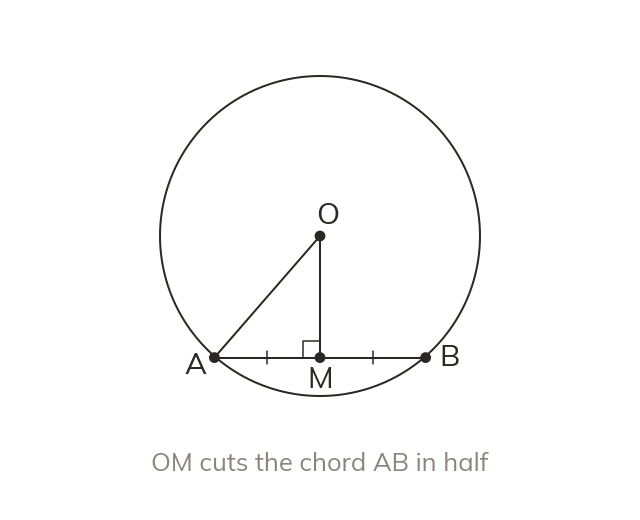
The perpendicular from the centre to a chord cuts it in half. That makes a right-angled triangle with a radius.
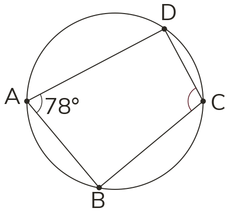
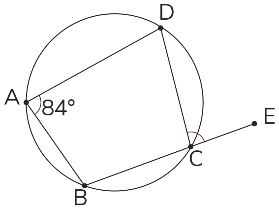
Pick an answer. If it's wrong, the feedback tells you which mistake it was.
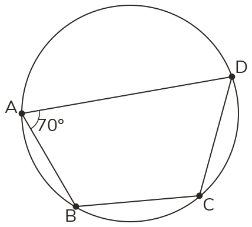
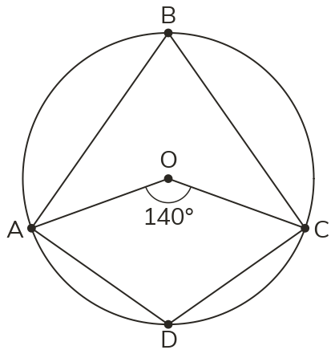
Read each card, then follow the worked examples one step at a time.
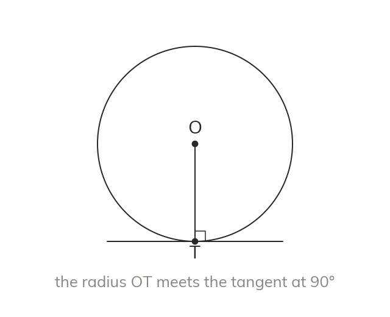
A tangent touches the circle at one point only. There it is at right angles to the radius.
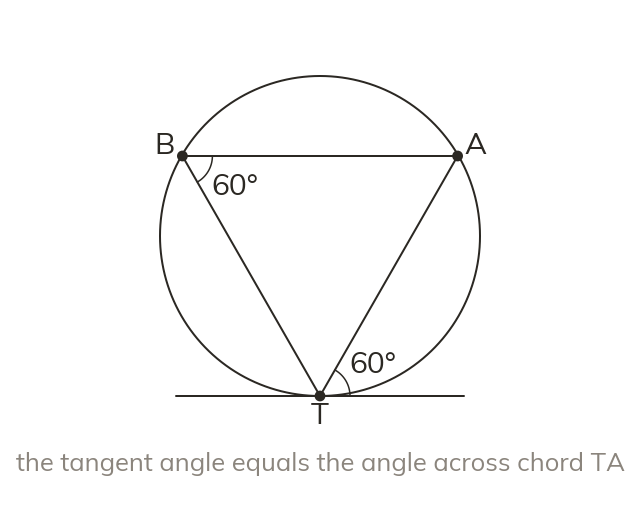
The angle between a tangent and a chord equals the angle in the other segment. Look across the chord, not beside it.
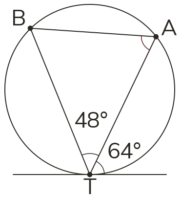
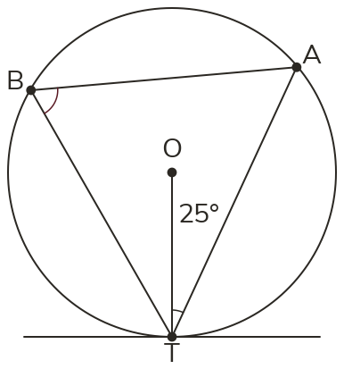
Pick an answer. If it's wrong, the feedback tells you which mistake it was.
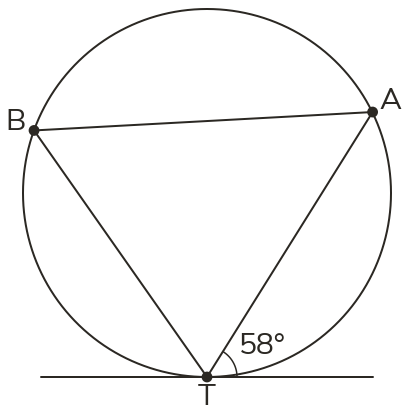
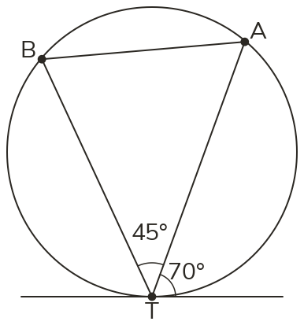
Finished? Next lesson: 10H.14.4 Problem Solving with Circle Theorems.
Log in, then search for a code to practise that skill.
Videos, worksheets and more on each part of this lesson.